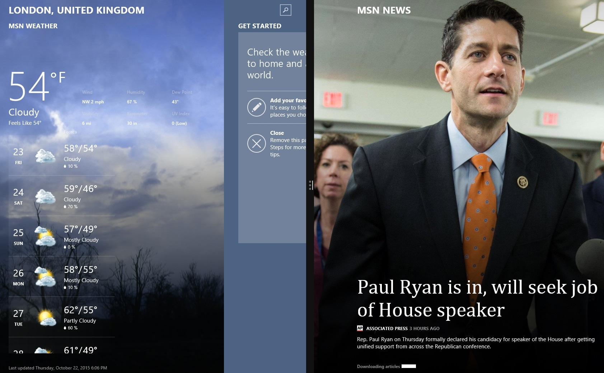
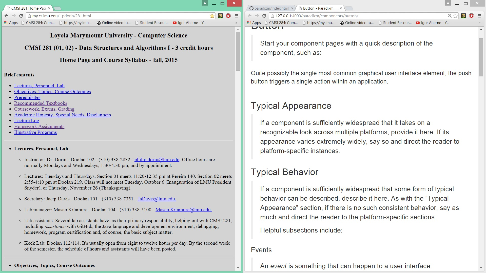
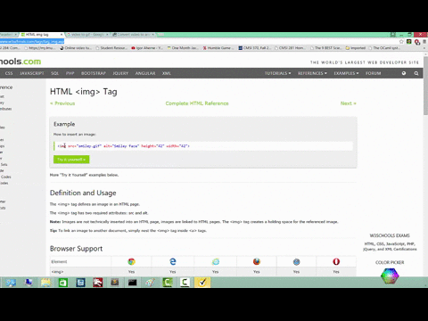

Typical Appearance
Split view is a feature in current operating systems that allows the user to allocate space for two applications side-by-side. This feature is denoted by a dividing line between the two applications. The division is mutable so the applications can split the screen in different ratios. To initiate split view, the user drags a window to the edge of the screen while on the desktop. Then the user drags another window to the other edge of the screen to complete the split.

Typical Behavior
The usual behavior for split view is resizing a window when dragged to the edge of the screen. If the top of the window is clicked and dragged to the left or right edge, the window will resize to half of the screen size. If dragged to the top edge of the screen the window will resize to the entire screen size.
In Windows 10 Microsoft updated the features to allow the user to quickly select what was needed on the other side of the screen. After resizing the first page, split view would have all other applicatons appear on the other side of the screen so one could be selected. This would improve the effiency of the user, because they would not need to search for the other application.

OS X El Capitan uses features that are very similar to Windows 8 app view, but OS X split view is only usable in full screen mode. El Capitan also has some similarities with Windows 10—selecting the app that goes on the other side.

iOS 11's split view behaves very similarly to computers'. The only major difference is how to activate the feature. The user can drag an app from the dock to the workspace while in another app or drag an app from the homescreen and open another app simultaneously. iOS11 did away with the swipe from the edge of the screen gesture.

Events
There are numerous events that signal to the user what the computer is about to do. The starting state of any window is unclicked. When clicked and held the system waits for the movement of the mouse. When moving the system continuously refreshes the location of the window. If the left mouse button is released, the window reverts to an unclicked state. If the window moves to the edge of the screen, the system shows a preview of what the size of the window will be. If the user releases the mouse, the window will be resized and return to the unclicked state.
In iOS, when a user presses and drags an app from the dock an animation turns the app into a larger shape, indicating that a release of the app will have some effect—Slide Over, in this case. Initiating Slide Over from the home screen has the same animation. Once in Slide Over, there is a small bar at the top of the window that is an indication of a gesture. Swiping down from the top will convert the display into Split View. In Split View, there is another small bar between the two apps that allows the user to move the divider. This small bar is typical of Apple software. The touch display uses swipes and press-and-drag gestures as opposed to click-and-drag; however, both iOS and desktop operating systems use animations to preview the outcome.
State Diagram

Variants
In Windows XP dragging to the edges of the screen did nothing. Instead the user had to right click the window in the task bar to get the windows to tile horozontally. This is very inefficient so in Windows 7 Microsoft allowed dragging windows to the edge of the screen.
In Windows 7, the split screen feature was very useful. It included many of the basic features that were in Windows 8 split view.
Windows 10 kept all the features that Windows 7 had, but also added cornering. Conering allows the user to split the screen four ways. Extra features also allow the user to fill in blank spaces for different configurations, such as three windows of different sizes.
OS X El Capitan has a strange way of doing split screen. Starting split screen requires that a user click on the maximize button and then hold and drag to create a split screen. When the split screen is created the operating system goes into full screen mode.
Apple implemented three different split view functionalities in iOS11. Slide Over is activated by dragging an app from the dock or homescreen into the workspace. Slide Over is used for quick multitasking, such as checking email. To initiate Split View, the user swipes down from the top of a Slide Over app. This allows the user to adjust where the division line goes. The third style on iOS11 is Picture-in-Picture, which allows the user to watch a video while working in another app.


Priority Metrics
Learnability
Learning how to use split view is incredibly simple. The motion of dragging the application window to the screen's edge is very repeatable and feels very intuitive. Most users should understand how to operate the component after watching another user. In iOS11 it is harder to learn the gestures but will not take long to master the actions after a day of use.
Efficiency
Using split view increases the efficiency of the user significantly. Instead of "alt-tabbing" to compare two projects. The user is able to look at both projects at the same time. An inefficient way to make a split screen is to resize the windows manually. This method takes more actions and takes more time. Therefore using the snap feature in Windows is very efficient. iOS11 split view added new features to increase efficiency and productivity. Split view now allows the user to drag and drop files from one app to another.
Memorability
Memorizing how to use split view is fairly easy. The simplicity of the component is what makes it easy to recall when needed. With Windows 10 the cornering feature makes memorizing more complicated, but even if forgotten there are other less effiecient ways of doing the same thing. Apple created different ways of activating Split View so that users have an option as to which gesture they use.
Errors
Errors can always happen, but with split view errors are very forgivable. One way split view reduces errors is by providing a preview of how much area the resized window will take. This preview ensures that the user knows if the mouse is in the correct location. With cornering in Windows 10 one error that commonly appears is when the user drags the window to the corner to try to split the screen in half. This will result in an error, but the preview of the what the resized window should look like will catch most errors. The most common error in iOS11 would be releasing the app before the animation denotes it is ready for Slide Over.
Satisfaction
Many users of of the split view feature are very satisfied with the results. Most users want to learn simpler and faster ways of doing things on the computer. When users learn about split view after years of using other methods they would most likely respond with gratitude. The new features in iOS11 make split view much more useful. Users will apreciate the new drag and drop feature which does away with opening one app, copying a file, and then pasting that file into another app.
Key Characteristics
Simplicity
The reason that split view is a great component is because split view is simple to use and effective. Most users learn how to use the system quickly and then use it constantly. Because of the simplicity split view is continued in Windows 10 and iOS11, with a few upgrades.
Platform Specific Instances
Windows 8
In Windows 8 many users did not use the new feature of making a split view of two applications outside of the desktop. The switching between application mode and desktop mode reduced efficiency and caused confusion with most users. Because of the failure of Windows 8, most people did not get to experiement with this component.
Windows 10
Windows 10 took the best from Windows 7 and removed many features that the customers didn't like from Windows 8. Many users still liked how they could split view in the desktop, so Microsoft upgraded the functionality of the feature. In Windows 10 screens can be split up to four ways. With the removal of the start screen from Windows 8 that version of split view was also removed.
OS X El Capitan
El Capitan has a confusing way of making split screen. Maybe it is because I am a Windows user, but clicking and dragging the maximize button does not seem intuitive for first time learners. Another problem is the switching between the full screen and desktop which creates many errors and increases inefficiencies.
iOS 11
iOS 11 did away with the simple swipe from the edge of the screen to activate Slide Over. The new gestures are less intuitive, but there is much more functionality. The two split view apps can now interact with one another; the user can drag and drop files or photos from one app into the other. The additional functionality built into the iOS 11 split view makes the system much more efficient; however, the new gestures create a learning curve.